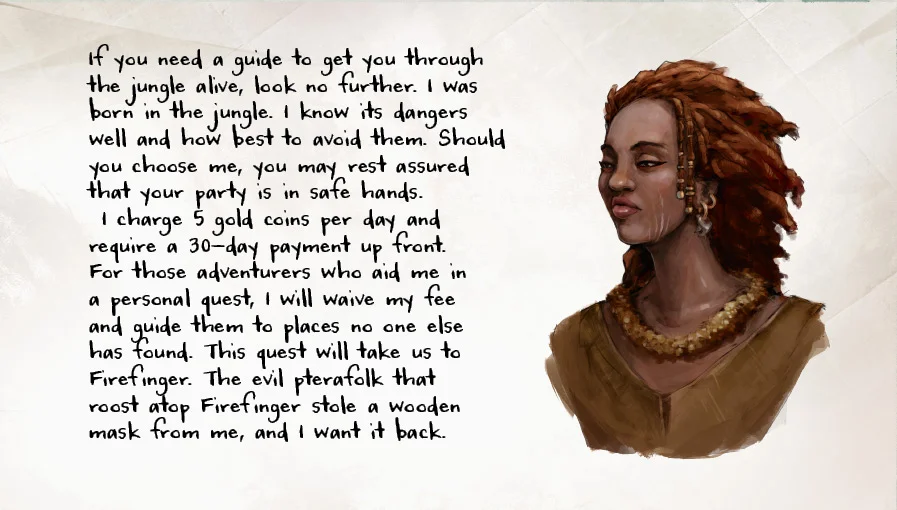
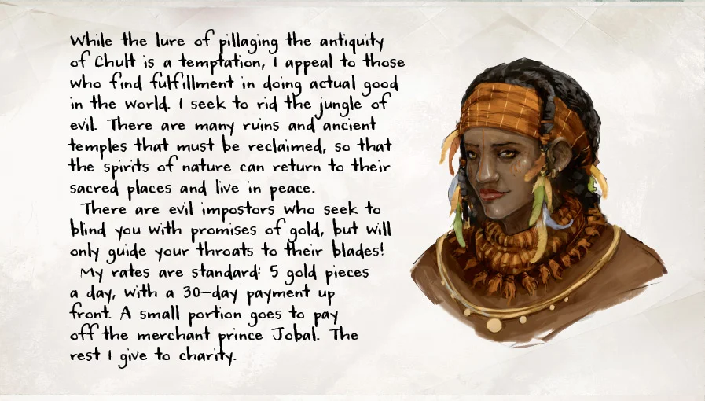
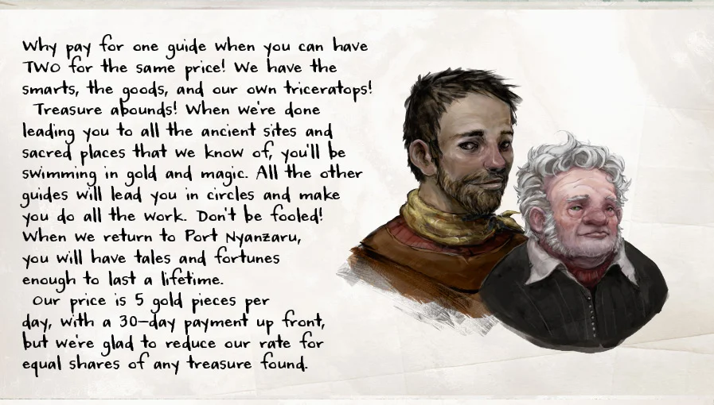
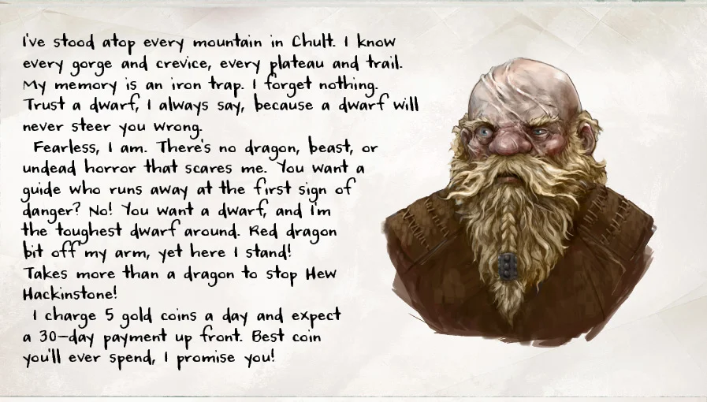
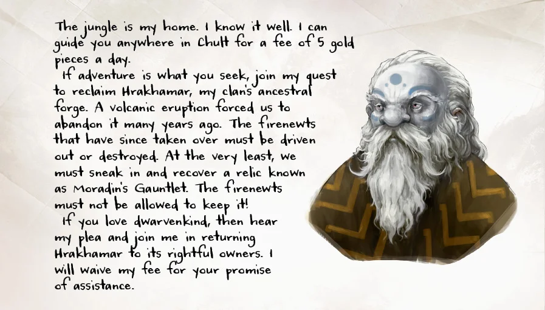
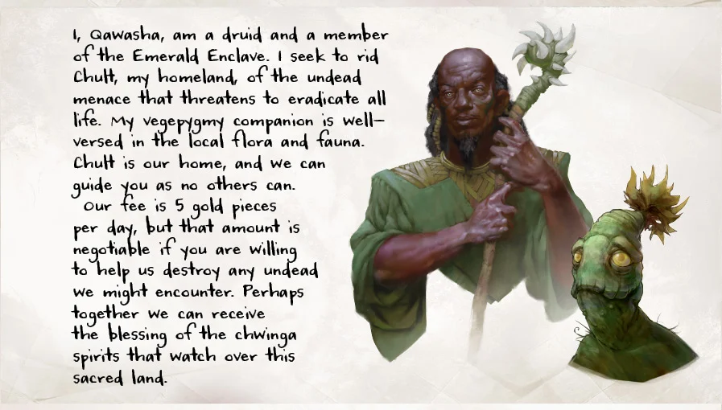
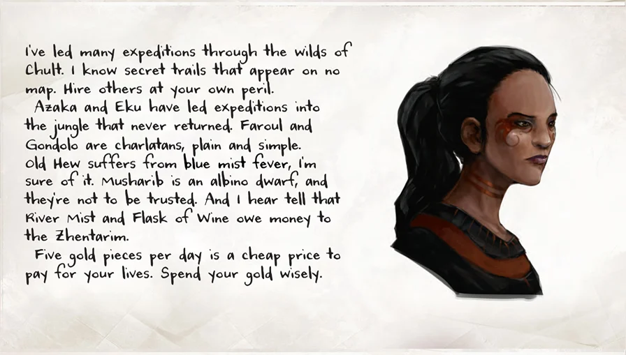

Guilde des guides de la jungle de Chult, contrôlée par Jobal, l'un des Princes marchands. Métier très réglementé : tarif unique, 5 po par jour, 30 jours payés avant le départ (soit 150 po). Selon Kaya, tous ceux qui sont revenus de la jungle avaient un guide. Prospectus remis par Le domestique de Wakanga (Séance 06), qui conseille aussi le bureau d'information du port.
Panneau de la Maison de repos de Kaya : « En quête d'aventure ? Garantissez votre retour : sollicitez un guide. » Six annonces officielles et une septième ajoutée en douce (Malar's Throat).

Membres connus
- Azaka Stormfang : née dans la jungle, en connaît les dangers. Renonce à son tarif si on l'aide dans
une quête personnelle : récupérer un masque de bois que lui ont volé les ptérafolks nichant au sommet
de Firefinger.

- Eku : veut débarrasser la jungle du mal, reprendre ruines et temples pour que les esprits de la
nature y reviennent. Met en garde contre des imposteurs qui promettent de l'or et mènent à la mort.
Une petite part de son tarif va au prince Jobal (frais de la guilde), le reste à la charité.

- Faroul & Gondolo : deux guides pour le prix d'un, avec leur propre tricératops ; promettent
trésors et magie. Tarif réduit contre des parts égales du trésor trouvé.

- Hew Hackinstone : nain, dit avoir gravi toutes les montagnes de Chult, n'oublie rien, n'a peur de
rien ; un dragon rouge lui a arraché un bras.

- Musharib : nain. Veut reprendre Hrakhamar, la forge ancestrale de son clan, abandonnée après une
éruption et occupée depuis par des firenewts ; au minimum, récupérer une relique, le Gantelet de
Moradin. Renonce à son tarif contre la promesse d'aide.

- Qawasha & Kupalué : Qawasha, druide de l'Enclave d'Émeraude, veut débarrasser Chult des
morts-vivants ; son compagnon vegepygmy Kupalué connaît la faune et la flore. Tarif négociable si on
aide à détruire les morts-vivants ; évoquent la bénédiction des esprits chwinga. Absents du panneau.

- Salida : dit connaître des sentiers secrets absents des cartes, et dénigre les autres : les
expéditions d'Azaka et d'Eku ne sont jamais revenues, Faroul et Gondolo sont des charlatans, Hew
souffre de la fièvre de la brume bleue, Musharib est un nain albinos pas fiable, et « River Mist » et
« Flask of Wine » doivent de l'argent au Zhentarim.

- ~~Malar's Throat : sur le panneau, sans prospectus.~~ Corrigé d'après la transcription : ce n'est pas un guide. Malar's Throat est un quartier de Port Nyanzaru ; c'est le titre de la 7ᵉ annonce, non officielle, d'une autre écriture et glissée de force entre les autres : « Pas de prince, pas de registre, pas de questions. On trouvera là où vous voulez aller. Et on le saura discrètement. », signée River Mist et Flask of Wine. Kael y voit du racolage.
{kind=link}
{kind=link}
{kind=link}
{kind=link}
{kind=link}
{kind=link}
{kind=link}
Ce qu'on sait
- Les prospectus sont en anglais (langue de la table) ; noms reproduits tels quels.
- Les cartes du panneau portent aussi de courtes accroches (transcription et notes de Kael) : Azaka, « la jungle me connaît par mon odeur, pas par mon nom ; je ne prends pas de l'or, mais de la dette » (le groupe s'en méfie) ; Eku, « quand vous ne voyez plus ce qui arrive, c'est le moment de me trouver » ; Faroul & Gondolo, deux guides pour le prix d'un et un tricératops, partage égal ; Hew Hackinstone, la loyauté des nains ; Musharib, « la forge n'est pas perdue, elle est en attente » ; Salida, « au sud, toujours au sud… rapide, expérimenté, je déteste attendre ».
- Dangers cités dans les prospectus : morts-vivants, firenewts, ptérafolks (Firefinger = « le doigt de feu »).
- Les sceaux rouges sur certaines cartes ne signifient rien de particulier.
- D'après l'intuition de Kael, les plus compétents sont sans doute aussi les plus chers.
- Plusieurs membres du groupe se méfient de Salida, qui dénigre les autres au lieu de se vendre.
Mystères
- ❓ Qui dit vrai parmi les accusations de Salida ?
- ❓ Que valent River Mist et Flask of Wine ?
Historique
- Séance 06 : panneau à l'auberge de Kaya ; tarifs et prospectus remis par le domestique de Wakanga.